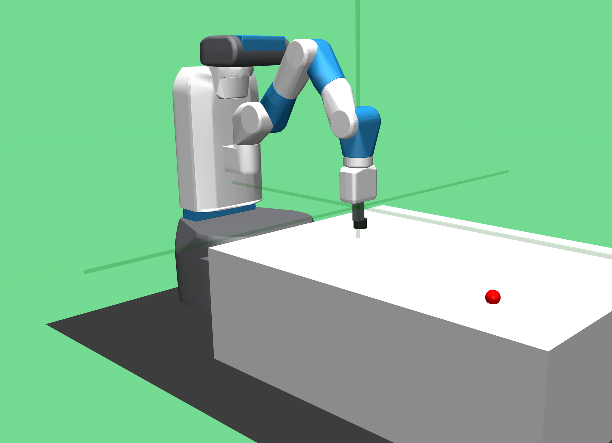

MuJoCo

- 官方网站：http://www.mujoco.org
- GitHub：https://github.com/google-deepmind/mujoco
- 物理引擎：MuJoCo（自研）
- 许可：Apache 2.0 开源
引言
MuJoCo (Multi-Joint dynamics with Contact) 是一款专注于接触动力学仿真的高性能物理引擎。MuJoCo最初由华盛顿大学 (University of Washington) 的Emo Todorov教授开发，侧重控制与接触相关的仿真与优化。2021年，DeepMind收购了MuJoCo，并于2022年将其以Apache 2.0许可证完全开源，使其成为机器人强化学习 (Reinforcement Learning) 研究领域中最重要的仿真平台之一。
发展历程
MuJoCo的发展经历了几个重要阶段：
- 2012年：Emo Todorov在华盛顿大学首次发布MuJoCo，作为商业软件提供试用和付费许可
- 2015年至2020年：随着OpenAI Gym将MuJoCo作为标准仿真后端，MuJoCo在强化学习社区中获得广泛采用
- 2021年10月：DeepMind宣布收购MuJoCo
- 2022年5月：MuJoCo以Apache 2.0许可证正式开源，任何人均可免费使用和修改
- 后续版本：开源后开发节奏加快，持续引入新功能，包括原生Python绑定 (Native Python Bindings)、MuJoCo XLA (MJX) 等
物理引擎特性
MuJoCo的物理引擎针对机器人控制和学习任务进行了深度优化：
- 广义坐标系 (Generalized Coordinates)：使用最小坐标表示法描述系统状态，避免了约束求解中的冗余计算
- 高效接触求解 (Contact Solver)：采用凸优化方法处理接触动力学，保证了求解的唯一性和稳定性
- 软接触模型 (Soft Contact Model)：通过可配置的刚度和阻尼参数模拟柔性接触，避免了刚性接触模型中常见的数值不稳定
- 肌腱与执行器建模 (Tendon and Actuator Modeling)：支持复杂的肌腱路由和多种执行器类型，适合生物力学仿真
- 高仿真速度：单线程下可实现远超实时的仿真速度，适合大规模并行训练
MJCF 模型格式
MuJoCo使用自定义的MJCF (MuJoCo XML Format) 格式描述仿真模型。MJCF文件采用XML语法，定义机器人的运动学结构、动力学参数和仿真环境：
<mujoco model="example">
<worldbody>
<light diffuse=".5 .5 .5" pos="0 0 3" dir="0 0 -1"/>
<geom type="plane" size="1 1 0.1" rgba=".9 .9 .9 1"/>
<body name="box" pos="0 0 1">
<joint type="free"/>
<geom type="box" size=".1 .1 .1" rgba="1 0 0 1" mass="1"/>
</body>
</worldbody>
</mujoco>
MJCF支持定义关节 (Joint)、几何体 (Geom)、执行器 (Actuator)、传感器 (Sensor)、接触排除 (Contact Exclusion) 等元素。MuJoCo同时支持导入URDF格式模型并自动转换。
Python 绑定
MuJoCo提供多种Python绑定方式：
- 原生Python绑定：开源后官方推出的原生绑定（
mujoco包），安装简单，API设计清晰，性能优异 - mujoco-py：由OpenAI开发的早期Python绑定，目前已不再积极维护，建议迁移至原生绑定
- dm_control：由DeepMind开发的控制任务套件 (Control Suite)，在MuJoCo之上构建了一系列标准化的控制基准任务
安装原生Python绑定：
pip install mujoco
在强化学习研究中的应用
MuJoCo在强化学习领域的地位举足轻重。OpenAI Gym（现为Gymnasium）中大量经典的连续控制基准任务 (Benchmark Tasks) 均基于MuJoCo构建：
- HalfCheetah：半猎豹奔跑控制
- Ant：四足蚂蚁行走
- Humanoid：人形机器人运动控制
- Walker2d：双足行走
- Hopper：单足跳跃
这些任务已成为评估强化学习算法（如PPO、SAC、TD3等）的标准基准。MuJoCo XLA (MJX) 进一步允许在GPU/TPU上运行批量仿真，极大加速了策略训练过程。
与其他物理引擎的对比
| 特性 | MuJoCo | PyBullet | PhysX |
|---|---|---|---|
| 坐标系统 | 广义坐标 | 笛卡尔坐标 | 笛卡尔坐标 |
| 接触模型 | 软接触 (凸优化) | 刚性接触 | 刚性接触 |
| 仿真速度 | 极快 | 快 | 快 (GPU加速) |
| 许可证 | Apache 2.0 | zlib | 商业/免费 |
| RL集成 | 原生支持 | 良好 | 通过Isaac Sim |
MJCF 建模详解
MuJoCo 使用 MJCF（MuJoCo Modeling Format）格式的 XML 文件描述机器人和场景。MJCF 的设计哲学是简洁和默认值继承，子元素自动继承父元素的属性。
基本结构
<mujoco model="my_robot">
<!-- 编译器选项 -->
<compiler angle="radian" coordinate="local"/>
<!-- 物理引擎选项 -->
<option timestep="0.002" gravity="0 0 -9.81" integrator="RK4"/>
<!-- 资产（网格、材质、纹理） -->
<asset>
<mesh name="body_mesh" file="body.stl" scale="0.001 0.001 0.001"/>
<material name="blue" rgba="0.2 0.4 0.8 1"/>
</asset>
<!-- 默认属性（子元素继承） -->
<default>
<joint damping="0.1" frictionloss="0.01"/>
<geom condim="4" friction="1 0.005 0.0001"/>
</default>
<!-- 世界体 -->
<worldbody>
<light name="top" pos="0 0 3" dir="0 0 -1"/>
<geom name="floor" type="plane" size="10 10 0.1"/>
<body name="torso" pos="0 0 1.0">
<freejoint/> <!-- 6 DoF 自由关节 -->
<geom name="torso_geom" type="capsule" fromto="0 0 -0.2 0 0 0.2" size="0.06"/>
<body name="left_arm" pos="0 0.2 0.1">
<joint name="left_shoulder" type="hinge" axis="0 1 0" range="-1.57 1.57"/>
<geom name="left_arm_geom" type="capsule" fromto="0 0 0 0 0.3 0" size="0.04"/>
</body>
</body>
</worldbody>
<!-- 执行器 -->
<actuator>
<motor name="left_shoulder_motor" joint="left_shoulder" gear="100" ctrllimit="-1 1"/>
</actuator>
<!-- 传感器 -->
<sensor>
<accelerometer name="imu_acc" site="torso_site"/>
<gyro name="imu_gyro" site="torso_site"/>
<jointpos name="left_shoulder_pos" joint="left_shoulder"/>
<jointvel name="left_shoulder_vel" joint="left_shoulder"/>
</sensor>
</mujoco>
关节类型
MuJoCo 支持以下关节类型：
| 关节类型 | 自由度 | 典型应用 |
|---|---|---|
hinge |
1（旋转） | 手臂/腿部关节 |
slide |
1（平移） | 线性执行器、活塞 |
ball |
3（旋转） | 球形关节、肩关节 |
free |
6（平移+旋转） | 浮动基座（人形机器人躯干） |
执行器类型
<!-- 力矩执行器（直接控制力矩） -->
<motor name="motor1" joint="joint1" gear="100"/>
<!-- 位置伺服（目标位置控制） -->
<position name="servo1" joint="joint1" kp="1000"/>
<!-- 速度伺服 -->
<velocity name="vel_ctrl" joint="joint1" kv="100"/>
<!-- 通用执行器（结合增益和阻尼） -->
<general name="gen_act" joint="joint1" gainprm="100" biasprm="0 -100 0"/>
Python API（mujoco 包）
2022 年开源后，MuJoCo 提供了原生 Python 绑定，接口简洁直观：
import mujoco
import mujoco.viewer
import numpy as np
# 加载模型
model = mujoco.MjModel.from_xml_path("robot.xml")
data = mujoco.MjData(model)
# 重置到初始状态
mujoco.mj_resetData(model, data)
# 设置控制输入
data.ctrl[:] = [0.5, -0.3, 0.1] # 各执行器控制量
# 运行仿真步骤
for _ in range(1000):
mujoco.mj_step(model, data)
# 读取传感器数据
print("关节位置:", data.qpos)
print("关节速度:", data.qvel)
print("IMU加速度:", data.sensor("imu_acc").data)
# 交互式可视化（启动 MuJoCo 查看器）
with mujoco.viewer.launch_passive(model, data) as viewer:
for _ in range(1000):
mujoco.mj_step(model, data)
viewer.sync()
关键数据结构
| 属性 | 说明 |
|---|---|
data.qpos |
广义坐标（关节位置 + 浮动基座位姿） |
data.qvel |
广义速度 |
data.ctrl |
执行器控制输入 |
data.sensordata |
所有传感器的原始数据数组 |
data.xpos |
所有刚体在世界坐标系中的位置 |
data.xmat |
所有刚体的旋转矩阵 |
model.nq |
广义坐标维度 |
model.nu |
执行器数量 |
MJX：GPU 加速仿真
MJX（MuJoCo XLA）是 MuJoCo 的 JAX 实现，将仿真计算迁移到 GPU/TPU，实现大规模并行仿真：
import mujoco
import mujoco.mjx as mjx
import jax
import jax.numpy as jnp
# 将模型转换为 MJX 格式
model = mujoco.MjModel.from_xml_path("robot.xml")
mjx_model = mjx.put_model(model)
mjx_data = mjx.put_data(model, mujoco.MjData(model))
# 使用 JAX 的 vmap 并行化：同时运行 4096 个环境
batch_size = 4096
def step_fn(data):
return mjx.step(mjx_model, data)
# 批量初始化
batched_data = jax.tree_map(
lambda x: jnp.stack([x] * batch_size), mjx_data
)
# JIT 编译 + vmap 并行
step_batched = jax.jit(jax.vmap(step_fn))
batched_data = step_batched(batched_data)
MJX 的主要优势：
- 并行规模：单块 GPU 可同时运行数千个仿真环境
- 梯度计算：通过 JAX 自动微分，直接对仿真过程求梯度（可微仿真）
- 与 RL 框架无缝集成：与 Brax、Flax、Optax 等 JAX 生态完美配合
与 Gymnasium 集成
MuJoCo 是 Gymnasium（前 OpenAI Gym）中 MuJoCo 环境的官方物理后端：
import gymnasium as gym
# 标准 MuJoCo 环境（基于 MJCF 模型）
env = gym.make("HalfCheetah-v4", render_mode="human")
obs, info = env.reset()
for _ in range(1000):
action = env.action_space.sample()
obs, reward, terminated, truncated, info = env.step(action)
if terminated or truncated:
obs, info = env.reset()
env.close()
Gymnasium 内置的 MuJoCo 环境包括：
| 环境名 | 任务描述 | 观测维度 | 动作维度 |
|---|---|---|---|
HalfCheetah-v4 |
二维猎豹奔跑 | 17 | 6 |
Ant-v4 |
四足机器人行走 | 111 | 8 |
Hopper-v4 |
单腿跳跃 | 11 | 3 |
Humanoid-v4 |
人形机器人行走 | 376 | 17 |
Swimmer-v4 |
蛇形游泳 | 8 | 2 |
Walker2d-v4 |
二维两足行走 | 17 | 6 |
强化学习工作流
以 PPO（Proximal Policy Optimization，近端策略优化）算法训练 Ant 行走为例（使用 Stable Baselines 3）：
import gymnasium as gym
from stable_baselines3 import PPO
from stable_baselines3.common.vec_env import SubprocVecEnv
from stable_baselines3.common.env_util import make_vec_env
# 并行 8 个环境加速训练
vec_env = make_vec_env("Ant-v4", n_envs=8)
# 定义 PPO 策略（MLP 网络）
model = PPO(
"MlpPolicy",
vec_env,
learning_rate=3e-4,
n_steps=2048,
batch_size=64,
n_epochs=10,
gamma=0.99,
gae_lambda=0.95,
clip_range=0.2,
verbose=1,
)
# 训练 1000万步
model.learn(total_timesteps=10_000_000)
model.save("ant_ppo")
# 评估
eval_env = gym.make("Ant-v4", render_mode="human")
obs, _ = eval_env.reset()
for _ in range(1000):
action, _ = model.predict(obs, deterministic=True)
obs, _, terminated, truncated, _ = eval_env.step(action)
if terminated or truncated:
obs, _ = eval_env.reset()
自定义机器人模型
将 URDF（Unified Robot Description Format，统一机器人描述格式）转换为 MJCF 的推荐工具：
# 使用 MuJoCo 内置转换器
python -c "import mujoco; mujoco.MjModel.from_xml_path('robot.urdf')"
# 使用 dm_control 的 URDF 解析器（更完整）
pip install dm_control
常用的开源 MJCF 机器人模型资源：
- MuJoCo Menagerie（Google DeepMind 官方）：包含 Franka、UR5e、Boston Dynamics Spot、Shadow Hand 等高质量模型
- unitree_mujoco：宇树 Go2、H1、G1 的官方 MJCF 模型
参考资料
- MuJoCo官方文档
- MuJoCo GitHub仓库
- dm_control控制任务套件
- Gymnasium MuJoCo环境
- MJX 文档
- MuJoCo Menagerie
- Todorov, E., Erez, T., & Tassa, Y. (2012). MuJoCo: A physics engine for model-based control. IEEE/RSJ International Conference on Intelligent Robots and Systems.
- Freeman, C. D., et al. (2021). Brax – A Differentiable Physics Engine for Large Scale Rigid Body Simulation. NeurIPS.